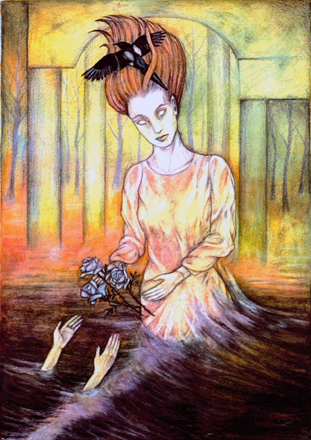
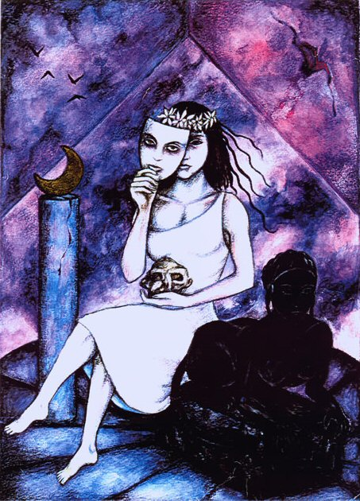

Sappho - Poetic Fragments

Fragment 94
I can reveal to you that I wished to die -For with much weeping she left me
Saying: "Sappho - what suffering is ours!
For it is against my will that I leave you."
In answer, I said: "Go, happily remembering me
For you know what we shared and pursued -
If not, I wish you to see again our [ former joys ] .....
The many braids of rose and violet you [ wreathed ]
Around yourself at my side
And the many garlands of flowers
With which you adorned your soft neck:
With royal oils from [ fresh flowers ]
You anointed [ yourself ]
And on soft beds fufilled your longing
[ For me ] ....

Fragment 96
She honoured you like a goddessAnd delighted in your choral dance.
Now she is pre-eminent among the ladies of Lydia
As the rose-rayed moon after the sinking of the Sun
Surpasses all the stars and spresads it's light upon the sea
And the flowers of the fields
To beautify the spreading dew, freshen roses
Soft chervil and the flowering melilot .....
Restless, she remembers gentle Atthis -
Perhaps her subtle judgemnet is burdened
By your [ fate ] .....
For us, it is not easy to approach
Goddesses in the beauty of their form
But you ....

Previous - Next